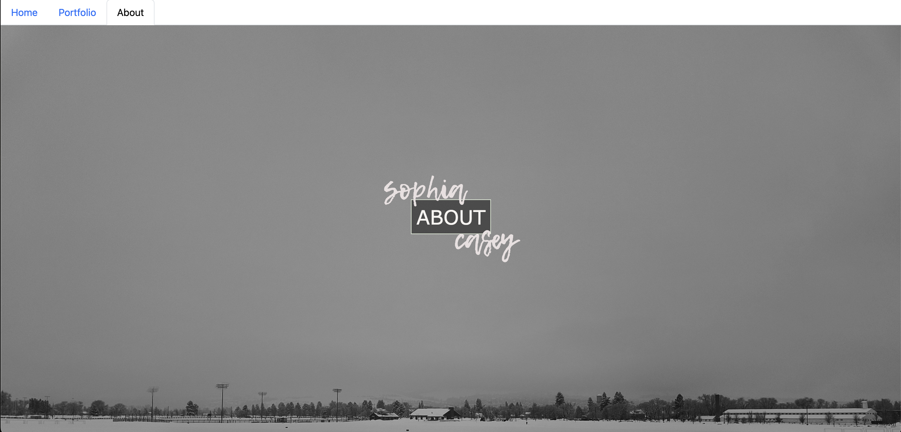

Website Ideas - Assignment 05
When I was just starting out, I already had a little bit of experience with HTML and CSS, but I only remembered little things like highlighting text by giving it a background color. As a creative, I always keep color palettes and aesthetics in mind, so I feel I've always been strong in that area. With this one, for example, I had a palette mostly in the purples and cooler tones like blue, and I chose images that would also align with that aesthetic so it would create a cohesive, balanced page.
At this point, I didn't know about different displays, or floating, and I didn't know nearly as much styling as I do now, such as styling links and understanding how to use the space on the page effectively. There's a lot of empty white space in this website because I didn't know how to center elements and images, so I kept it basic and aligned everything to the right. Now, I would play around with the space a bit more, as I am with this current page by using grids, splitting elements across the screen with 'float', and using text hierarchy.
Portfolio First Edition - Assignment 06
This was the beginning of the website I worked on the whole semester: a portfolio website. Along with this class, I took a course called Professional Portfolio. It was all about building your brand as a person, building a portfolio, and then at the end our final project was to create a website for our brand. Knowing this at the beginning, I thought this would be the perfect chance to play around with different layouts, aesthetics, and typefaces/fonts. My goal was that by the end of this class, I will have the format and skills to make my own portfolio website for my photography and films.
I was working on creating my own logo, so in this first rendition I included the first draft of my logo at the top of the page. With this project I started getting into grid layouts for photos, but I hadn't gotten it down in an effective way, so instead I spent a lot of time resizing each photo little by little until they were all the same height and achieved an equal amount of padding on each side. It wasn't the most efficient way, but I got it done and was incredibly proud of myself for figuring it out that early in the semester. During this time I also started getting more ambitious and did additional research to try to learn new skills that would help me improve my layouts. I started looking at 'float' and tried to figure out how to split the screen with text on one side and an image on the other. It took a couple of tries to get the spacing right, but I achieved it! And I was so proud of myself for getting the look that I wanted.
Portfolio Second Edition - Assignment 07
Rendition 2 of my portfolio website. I kept mostly everything from the first draft the same, but this time I included links in the header section beside my logo. I hadn't yet learned about different ways to style links, so those are pretty out of place when it comes to the aesthetic. This is also my first try at making a photo gallery grid layout. It isn't smooth, that's for sure. Instead of making a grid with CSS, since this was before that was introduced, I set the size and margin for each individual photo. I got it as close as I could, but I couldn't center them all without needing to change each image's size again.
I really liked how my Contact page turned out, and I enjoyed combining both the use of Photoshop and Illustrator to make my header photo. Now looking back, I realize I could've gotten the same effect by using a container that held both the text and the image. At the time, I had meticulously cropped the photo I used so it would perfectly fit my computer screen, and then in photoshop I added the header text over it. While it was the longer way to achieve my vision, I was proud because it added a lot more personality to the page and got me excited about stylizing the rest of my website. Specifically, I like how the header immediately lets the user know where they are in the website and what they can expect to see.
Portfolio Third Edition - Assignment 08
I finally stylized the links! This is when I started exploring more with the aesthetic and layout of the header/navigation. I included the final version of my logo that I had made for my Portfolio class, so I could really visualize what my end website might look like. This assignment is also where I start experimenting with having one image fill the entire screen, acting as the homepage. I like that style of website because it immediately showcases your work in full. Instead of having a photo gallery where the images are scaled down and the viewer has to scroll through them, I wanted to make it so one image would show right when the viewer opened the website. This is the place where I would showcase an image I was most proud of.
I struggled quite a bit here with making the navigation be on top of the image. Every time I tried the image would just be repeated, or the entire thing would move around sporadically on the page with each refresh. I eventually gave up and settled to make the background color of the entire page a shade of black that was close to the values in the image, and then made the header section a light gray so the rest of my links and logo would still be visible. This is before I had grasped the concept of containers, which would have made my vision possible here.
With the portfolio and photo gallery, I was getting closer! I had managed to make a photo grid that was evenly spaced and had equal margins for the right and left of the screen. The only thing I couldn't figure out was how to increase the spacing between each row. I tried every possible numerical value in my CSS but just couldn't do it, so I decided to leave it as it was.
Now I know that I need to make a separate section for columns and rows in my CSS so I can adjust the padding and margins for them individually instead of doing a general adjustment.
How To: Write a Screenplay - Assignment 09
Taking a break from my portfolio website, I made my first Instruction Website. I love screenwriting so I thought that would be an interesting topic to try to teach, since there's lots of little quirks and 'rules' that it may seem daunting to a beginner at first. I liked how my Hero Image style was working out in the last project, so I wanted to do the same with a Hero Video. I grabbed some free use footage of someone typing on a keyboard and was able to embed that into my website while I followed the lesson for this course. As always, I wanted a theme and aesthetic, so I chose colors directly from the video and used them in my header text.
I remember the main challenge I had with this website was in my Scripts page. I wanted it to be like my photo gallery, so there would be maybe 2-3 columns that had my screenplays linked with their respective images. However, that just wasn't working. The images would show up too large or too small, they wouldn't be evenly spaced and I struggled to make anything work besides the single column option. This still works and is okay, but I remember it not being exactly what I wanted. This is a lesson I'm still trying to learn, that it's okay if things don't turn out exactly how I envisioned, it's important to adapt and try something new. This is a lesson and skill that I will continue to refine.
Portfolio Fourth Edition - Assignment 10

Back to my portfolio site! I really went for it in terms of making my site fit my personal vision and preference for websites that I enjoy looking at. I brought back the full image idea, choosing one more colorful and a more recent photo. I finally, FINALLY, looked into containers and learned how to have both the text and image in it. I spent a good amount of time cropping the image so it would fit my screen without leaving any weird gaps. From there, I kept it minimalistic. I liked the idea of the viewer 'entering' my site, so I made my menu into an enter button where it would then take you to my portfolio and include a separate navigation system from there.
I had so much fun creating this page. It was ticking all of my boxes and preferences. I loved the simplicity and aesthetic that it immediately gave off with the home page. Even the smaller details, such as the links changing opacity when the mouse hovers over them. It's litte details like that, that I hadn't paid attention to before but really wanted to hone in on as I was more confident in my abilities. I wanted to make a website that I could show people and be proud of, and this was the beginning to that. For me, when I made this website it felt like a new era began. There's a clear distinction to me between the earlier parts of this class and the more recent parts. The earlier: where I wasn't really sure what I preferred with my website and I wasn't sure of my personal style in creating one. The more recent: I have found my footing, my personal style, and a layout that I love. And there's only more to explore from here that can elevate what I already have.
Also...this is where I finally nail down my photo grid! From here on out, my photo grid stays in it's same layout because I was so proud of myself for figuring it out and making that portfolio page look like I had imagined.
Portfolio Fifth Edition - Assignment 11

With this website, I dove head first into fonts and played around with different ones until I found one that aligned nicely with the aesthetic I already established. I landed on pairing a handwritten font 'Lemon Tuesday' with a sans serif 'Thesadith'. From previous classes I've taken, I knew that choosing fonts was important to how the overall flow and feel of your website. More often than not, if you're going with a handwritten, cursive font for headers like 'Lemon Tuesday' you're going to want something less fancy and more straight forward like a sans serif for everything else. It's easier on the eyes and brings a cohesive balance in graphic and web design.
This is also where I decided to take away some of the other pages we were required to have for the earlier projects. About Me and Contact Me pages just didn't feel like they fit for the kind of website I was trying to make. I wanted my website's purpose to be just showcasing my work, so that's what I did! I took away the About Me and Contact pages, and instead put a link to my social media so if viewers were interested they could learn more about me there and see more of my artwork that isn't on this website. Again, this is the section where I start not having to change a lot about the style and content itself, but just have to make small adjustments and refinements.
At this point, I was really starting to look at reactivity and responsiveness. I wanted this website to look good on every size screen, not just my laptop. But at this point, I wasn't sure how to code it for Mobile, so I tried my best to keep it responsive for bigger screens like laptops. I changed every value from px to 'em' or % so that when I changed the size of the window my elements would adapt with it. I was able to accomplish this with my photo grid, which was my main concern, but it ended up working smoother than I thought! The main part I still needed to figure out was the homepage; keeping those text elements from overlapping when the window changed dimensions. This is something that I'm still trying to work out. Responsiveness has always been my main challenge when it comes to coding, especially for screens that are drastically different sizes.
Portfolio Sixth Edition - Assignment 12

With this website I focused more on margins and padding. I kept everything from the previous website the same, because everything was to my liking. I took this tiime to explore margins and padding, to see if I would like the layout better if it had a border instead of being contained in the image. Looking back, and ahead at my later projects, I definitely like the layout where it's just all on the image, no border. The border makes it feeel too contained for me. With having the image take up the whole screen, the text elements and overall feel to the website felt more free and flowing, and I felt I could do a lot more creatively with that.
I think that's why I ended up making the changes I did for the next assignment. I wanted to get more creative with it. Establish a certain vibe or feeling. This design, although it did feel more unique to me as a person, it still wasn't 'it'. I wanted my website's homepage to evoke a hand-made feeling. Like it had been specially and carefully created. I wanted my passion for my work and for design to come through immediately. And this layout just wasn't entirely doing that for me.
Which leads me to my next project, where I feel I finally landed in that spot.
Portfolio Seventh Edition - Assignment 13

This is the website I'd like to showcase, because I had finally found it. The design, layout, and feel that I had been looking for. I made it even more minimalistic, removing the quote, the link to my socials, and instead made my name and the 'enter' menu the center of attention. I immediately loved this aesthetic a lot more. I took time finding the specific positions I wanted the text to be in, how big it should be, and how it would react with the mouse. After I made this the home page, I wanted to make every header on every page match this style so the theme was consistent throughout.
This is where I started trying to make my website responsive with Mobile screens. I spent lots of time switching between the two screen dimensions, laptop and mobile, making every adjustment so it would look good on all screens. When I looked at the mobile version through Developer Tools on my laptop, it looked great, everything was where it was supposed to be and worked all the same...
But when I looked it up on my own phone, the text was in the wrong spot. In fact, everything was a little bit off. I'm still not entirely sure how I'm supposed to make it responsive to EVERY screen possible. I used media queries when I coded this website, so I had one for laptop screen sizes and then another set of code for the size of an IPhone SE at 480px. I'm not sure if I would need to go in and create media queries for each type of screen individually. It's something I'm still trying to figure out but haven't quite found the answer for yet.
A good skill that I took away from this project was to be patient. Making those small adjustments for Mobile took a long time. It was a lot of time staring at the screen and moving elements a couple clicks over at a time, but it paid off. It was a good reminder for me to take breaks so I wouldn't get tunnel vision, and practicing patience is always a good thing to do.
Portfolio Eighth Edition - Assignment 14

This was the final assignment, before this one of course. I kept the homepage the exact same as before, because I loved it too much to change it drastically. For this assignment, I experimented with Bootstrap. It was really confusing for me and hard to grasp, so I kept it simple and changed the navigation. Even that took a while for me to do, because I struggled with connecting the bootstrap css file with the html file. Eventually I figured that out, so then it was just a matter of making it fit my aesthetic...which also proved to be really really hard. I couldn't get it to work. I couldn't find the elements I needed to change even with the search tool. This was the most challenging assignment yet for me, because the language in Boostrap and in JS felt so much more confusing and in depth than anything I'd ever seen.
Because of this, it felt very limiting - what all I could do. I couldn't be as creative as I wanted with the styling because I simply just didn't understand the language. For this reason, I would say that the REAL final draft of my website, and the one I want to showcase, is from Assignment 13. That's a website that feels entirely complete, balanced, and 100% me. I'm incredibly proud of that website, especially when I compare it to where I started in this semester.